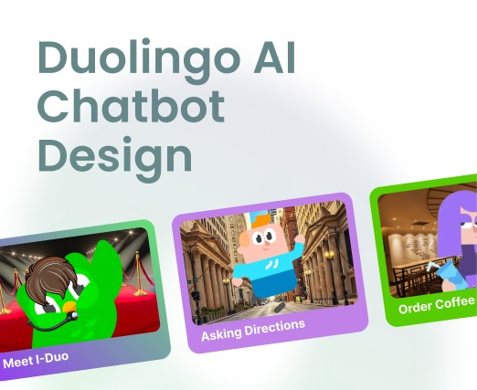
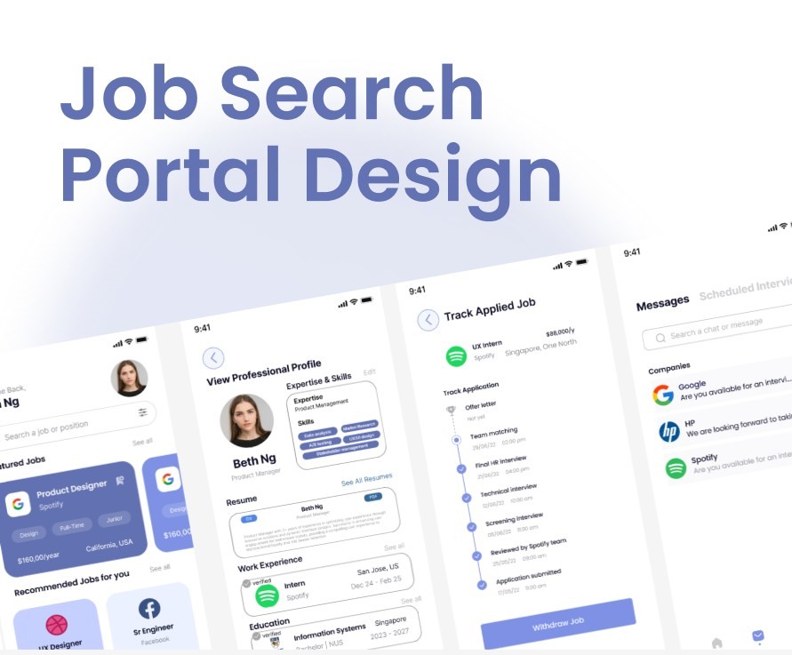
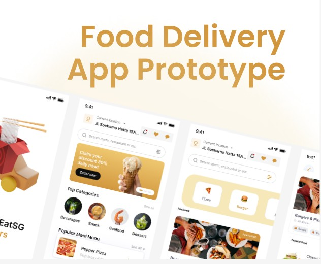
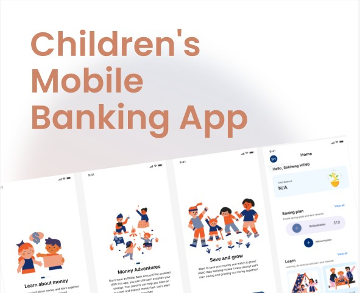
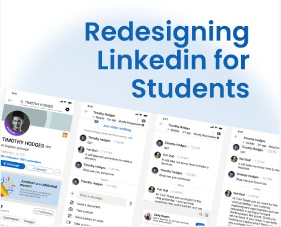

Latest Works
Here are some of my projects that I have worked on. Feel free to check them out!

Duolingo AI chatbot
Conceptualised Design to help users improve conversational skills

Bank Superapp
Redesigning traditional banking app to a super app that includes more products and services

Job Search Portal Design
Redesigned usual job portals to connect job-seekers to opportunities effectively.

Food Delivery App Design
Designed the admin, user, driver, and merchant app experiences for a food delivery company

Children's Mobile Banking App Design
Banking app designed for children

Linkedin for Students
Developed a student-focused edition of LinkedIn for academic and career networking.